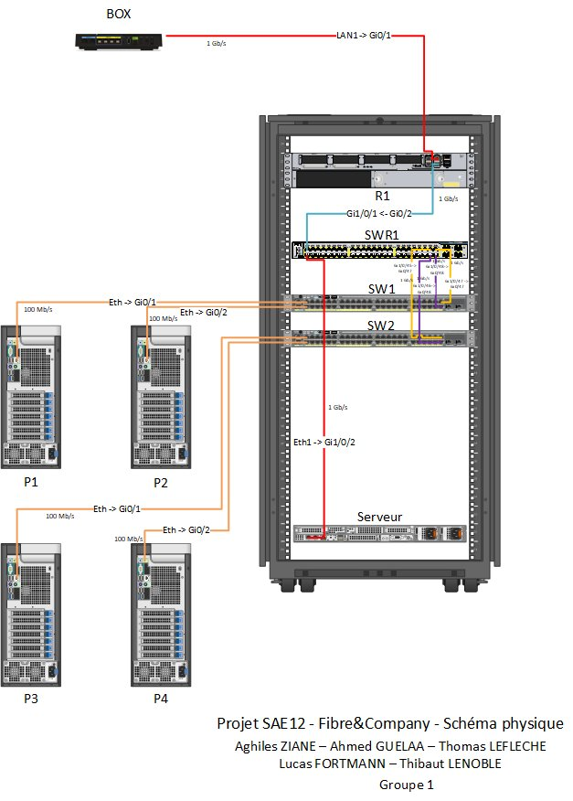
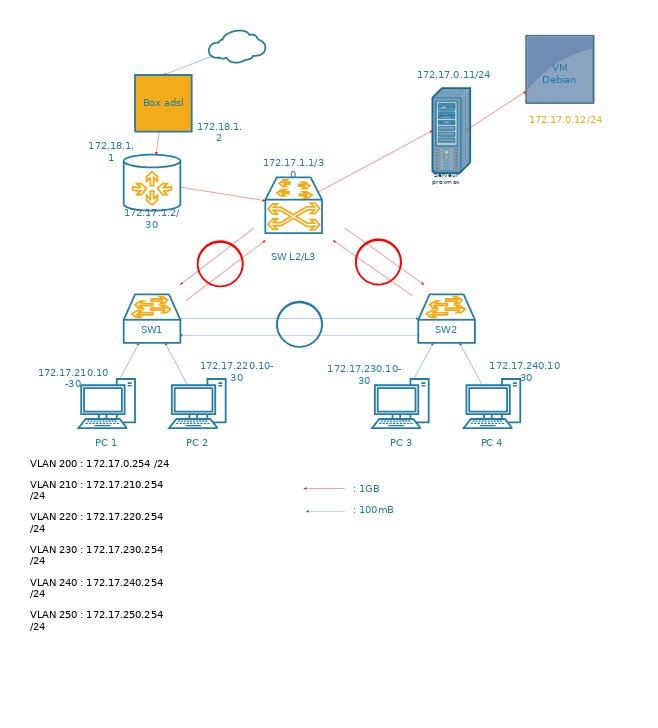
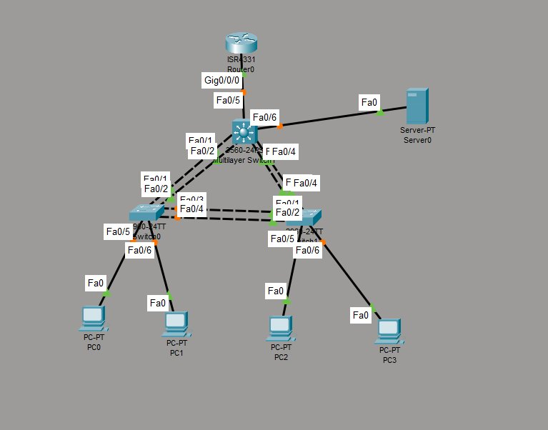

Le scénario : on est recruté dans une entreprise fictive, Fibre&Company, qui doit doubler ses effectifs. Son réseau actuel est trop basique et pas sécurisé. Notre mission était de concevoir et déployer un nouveau réseau LAN complet avec des VLANs, des commutateurs Cisco (2960X et 3560), un routeur 2911, une VM Debian avec des services (web, FTP, DNS, TFTP) et des mesures de sécurité (SSH, VLAN parking, désactivation telnet/HTTP).
C'était notre premier vrai projet de groupe en réseau. On avait les documents du projet mais pas de guide étape par étape : il fallait comprendre ce qu'on attendait de nous et s'organiser par nous-mêmes.



! Lien vers le Switch multilayer interface GigabitEthernet0/1 ip address 172.17.1.2 255.255.255.0 ip nat inside ! Lien vers la Box ADSL interface GigabitEthernet0/2 ip address 192.168.111.2 255.255.255.0 ip nat outside ! Route par défaut + NAT ip route 0.0.0.0 0.0.0.0 192.168.111.1 access-list 1 permit 172.17.0.0 0.0.255.255 ip nat inside source list 1 interface Gi0/2 overload ! Accès SSH uniquement ip domain-name fibre.lan crypto key generate rsa modulus 2048 username admin privilege 15 secret azerty line vty 0 4 transport input ssh login local
| Difficulté rencontrée | Ce que je ferais si c'était à refaire |
|---|---|
| Premier projet de groupe de cette taille : on ne savait pas trop par où commencer, les documents étaient denses et sans guide pas-à-pas. | Prendre un temps en début de projet pour lire tous les documents ensemble, lister les tâches concrètes et les prioriser avant de toucher au matériel. |
| Le plan d'adressage IPv4 a pris du temps à bien poser avant de pouvoir configurer les équipements. | Faire le plan d'adressage en tout premier, le valider avec le groupe, puis seulement passer aux manips. Ça aurait évité des allers-retours. |
Ce projet m'a appris à m'organiser en équipe, à répartir les tâches et à construire un réseau étape par étape, du schéma à la manip. Avant ce projet, les réseaux restaient théoriques pour moi. Après, je sais configurer un routeur, créer des VLANs, mettre en place du RSTP et déployer des services sur une VM Debian. C'est aussi la première fois que j'ai vu le lien entre tous les cours (R101, R103, R108) appliqués ensemble sur un seul projet. Je me positionne à un niveau satisfaisant sur les AC visés : je suis capable de déployer un réseau fonctionnel en équipe, mais je dois encore gagner en rapidité et en autonomie sur le diagnostic.